Nombre del Cortometraje
2024
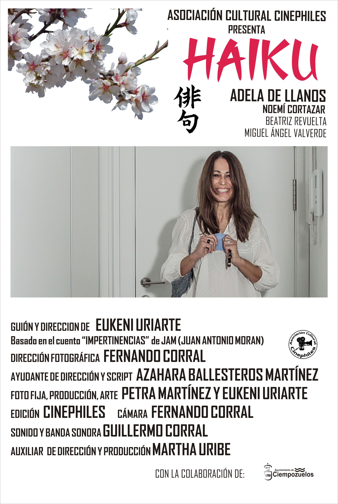
Sinopsis
Marga es una profesora de instituto que empieza a recibir notas con pequeños poemas en el ascensor.
Ficha Técnica
- Dirección: Eukeni Uriarte
- Guion: Eukeni Uriarte
- Reparto : Adela de Llanos, Noemí Cortázar, Miguel Ángel Valverde, Beatriz Revuelta
- Producción: Eukeni Uriarte, Petra Martínez
- Montaje: Fernando Corral
- Fotografía: Fernando Corral
- Sonido: Guillermo Corral
- Música: Guillermo Corral
- Ayte. Dirección: Azahara Ballesteros, Martha Uribe
- Ayte. Producción: Martha Uribe
- Formato de rodaje: 4K, 24fps (Sony FS5) | 2.35
- Ópticas: Sigma 18-35 f/1.8 | Sigma 50-100 f/1.8 | Tamron 12-16 f/2.8 | Sony 18-105 f/4
- Edición y Color:DaVinci Resolve
- Duración: 12 minutos
Imágenes
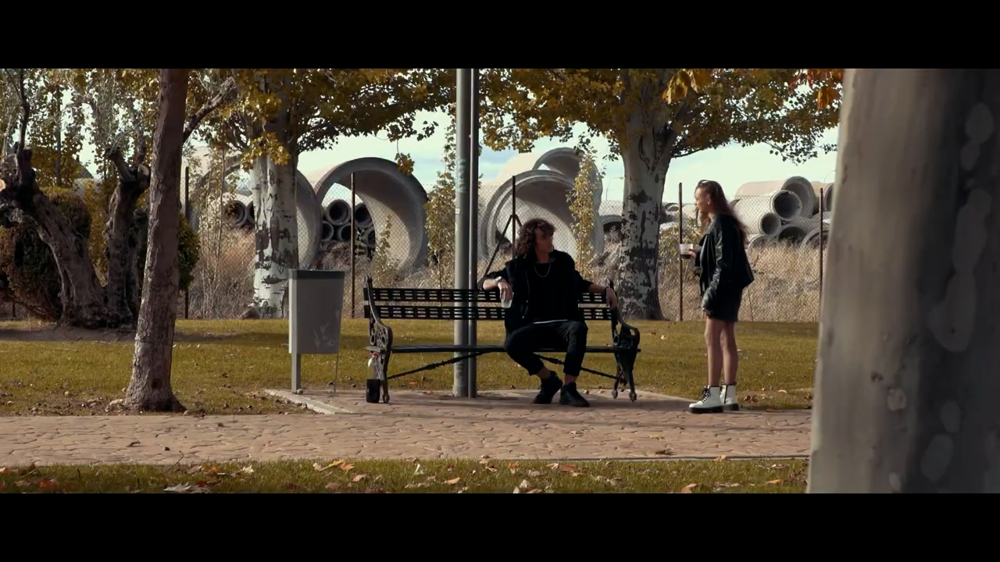
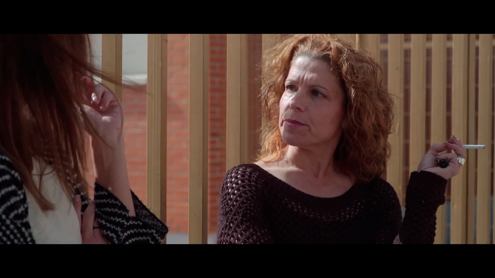
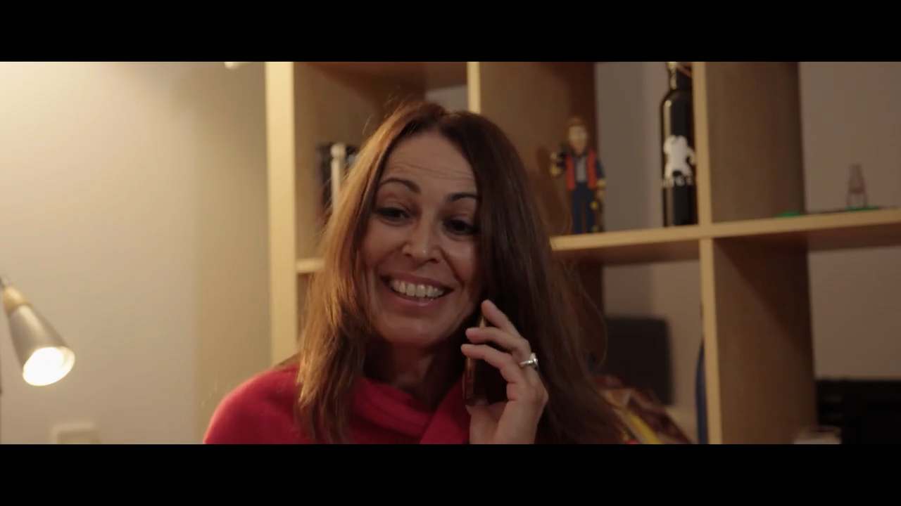
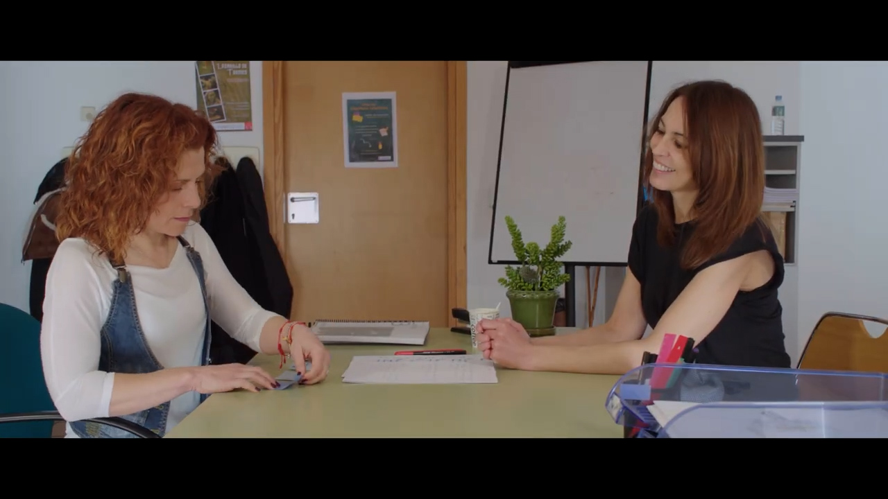
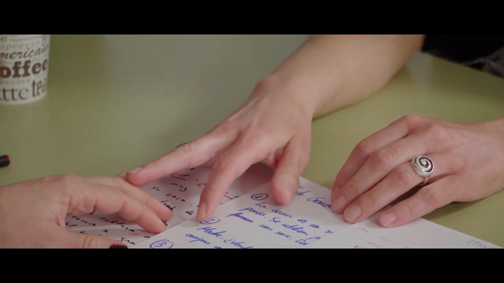
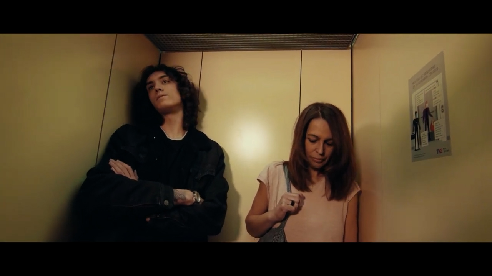
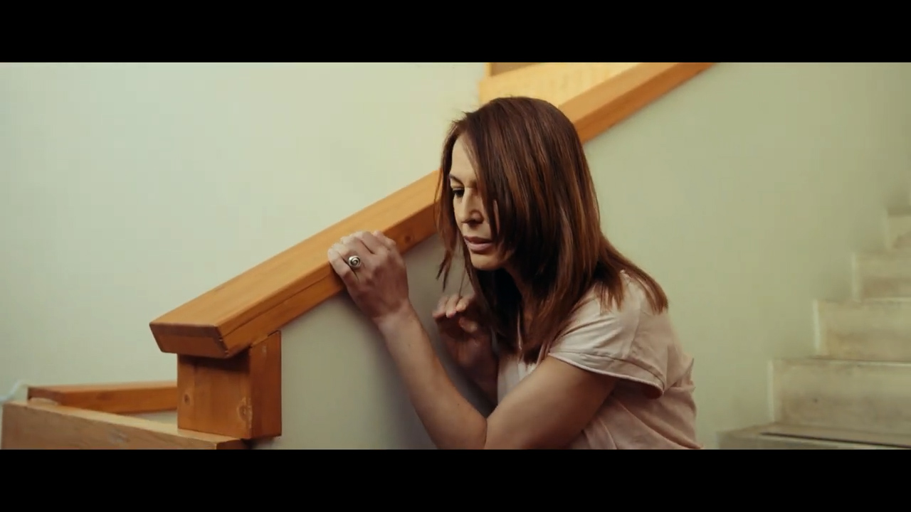
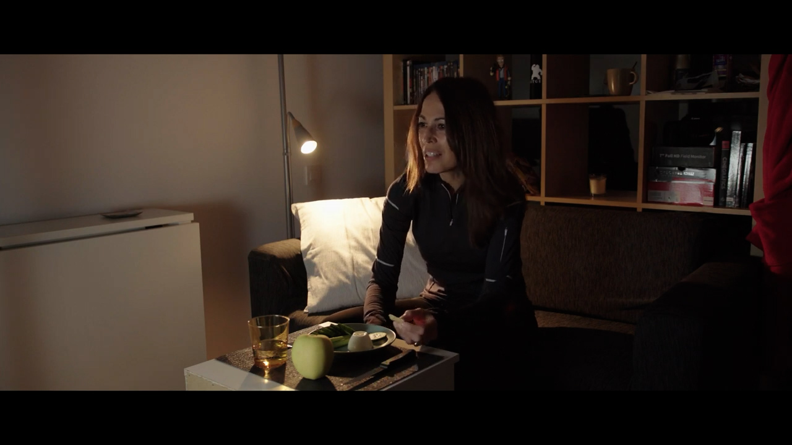
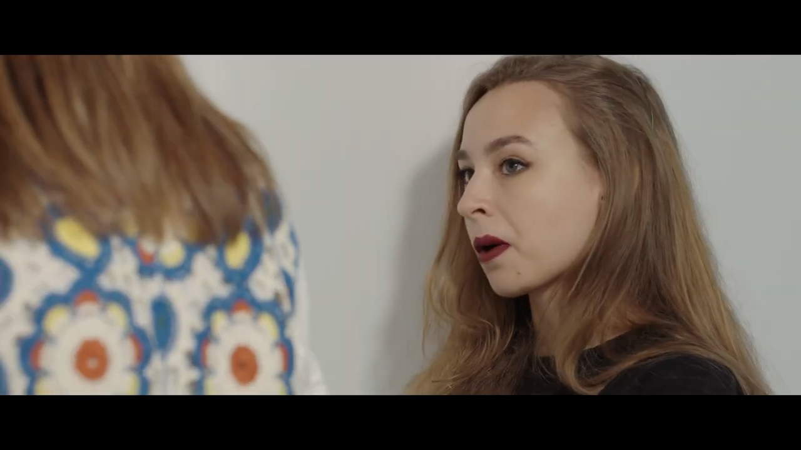
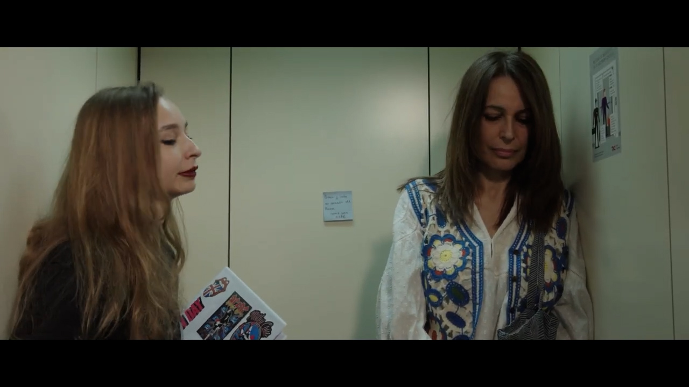
Making Of
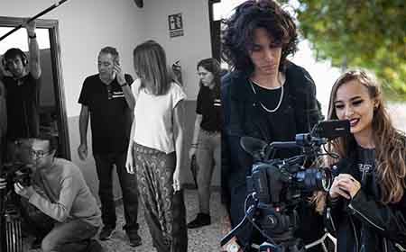
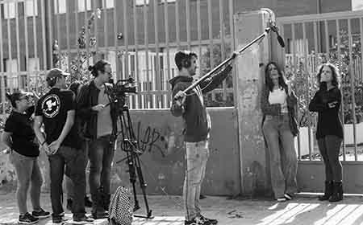
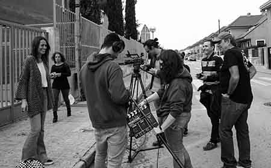
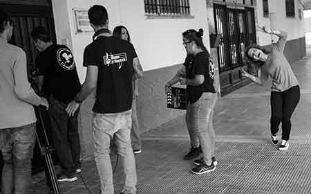